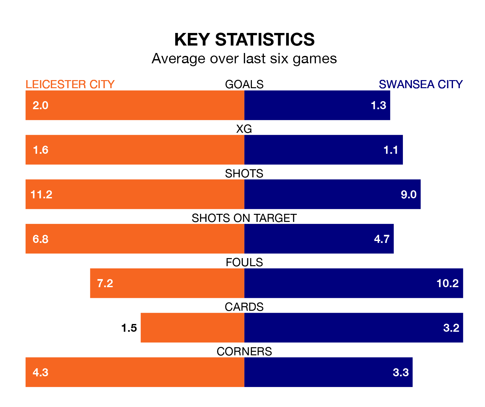

Leicester City are heavy favourites to keep all three points at home in Tuesday's late kick-off against Swansea City.
The Foxes, who sit top of EFL Championship with 28 games played, are priced at 1.3 to seal victory at the King Power Stadium.
Sitting 15 places and 33 points behind them in the table, Swansea are 7.8 to win with *Betting Company*, while the draw is at 4.8.
With 56 goals in 28 games so far this season, Leicester are the league's highest scorers with 2.0 goals per game. And they are conceding fewer than average, letting in 22 goals at a rate of 0.8 per game.
Swansea, meanwhile, are average scorers, with 1.4 goals per game. They have conceded 1.6 goals per game.
In the last 10 years, Leicester and Swansea have played each other on nine occasions. Leicester won six of them, Swansea two, and they drew once.
On average, the Foxes scored 1.9 goals and the Swans 0.9 in those matches.
Their last meeting was on October 21, when Leicester won 3-1 away.
With Mads Hermansen between the sticks, Leicester City can rely on one of the league's safest pair of hands. He has kept nine clean sheets in his 27 appearances this season, and only two other 'keepers – West Bromwich Albion's Alex Palmer and Leeds United's Illan Meslier – have been able to prevent the opposition scoring on more occasions in EFL Championship.
In Swansea City's net, Carl Rushworth has five clean sheets in 28 games. He has conceded a goal every 61 minutes, more than twice as often as the 135 minutes between goals for Hermansen.
The Foxes are in reasonable form in EFL Championship, with three wins and two draws from their last six games.
With two wins and two draws over that period, the Swans' form is worse – they have taken eight points from 18, compared to the hosts' 11.
Leicester's last match was on January 22, a 1-1 draw against Ipswich Town, with Leif Davis getting the goal for the Foxes.
Swansea lost 3-1 against Southampton last time out, on January 20, with Jamie Paterson on the scoresheet.
Tuesday's match will be refereed by Keith Stroud, who has taken charge of 14 EFL Championship games so far this season, issuing one red card and booking 73 players. He has not awarded any penalties.
The last Leicester game Stroud refereed was a 3-2 home win against Millwall on December 13. His last Swansea match was their 5-0 loss away at Southampton on December 26.
Updated: 10:03 (UTC), 30/01/24